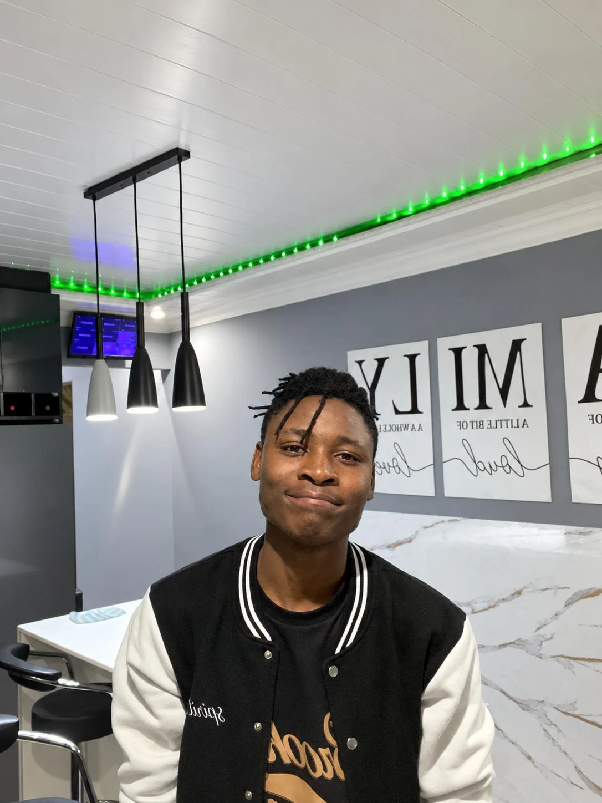
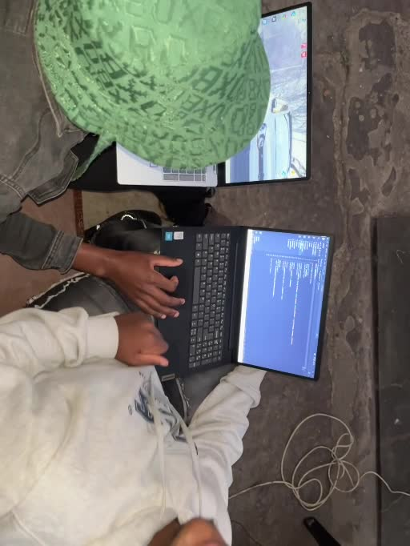
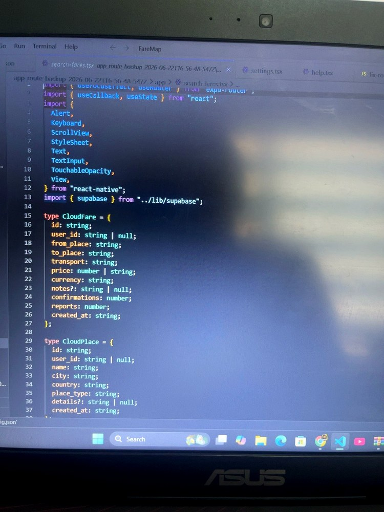

Carlton / spirit2k5
The person behind the builds.
I’m Carlton Mahlori Tshianeo. Spirit2k5 is where I turn ideas into websites, apps and digital products — from the first layout to the code, testing and final launch.
Johannesburg, South AfricaDesign + developmentWeb & digital products
How I work
I’d rather show the build than make big claims.
I care about the small things that make a website feel finished: spacing, mobile behaviour, loading, clear navigation, useful forms and a design that actually fits the business.
That is why the portfolio includes development footage as well as finished work. Clients can see how the project moves from development to a real live result.
See the work →Behind the scenes
Real work sessions.


Work with spirit2k5